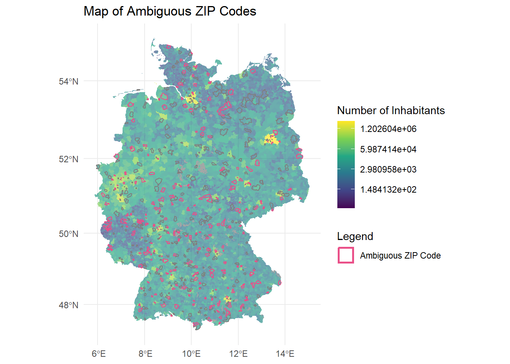
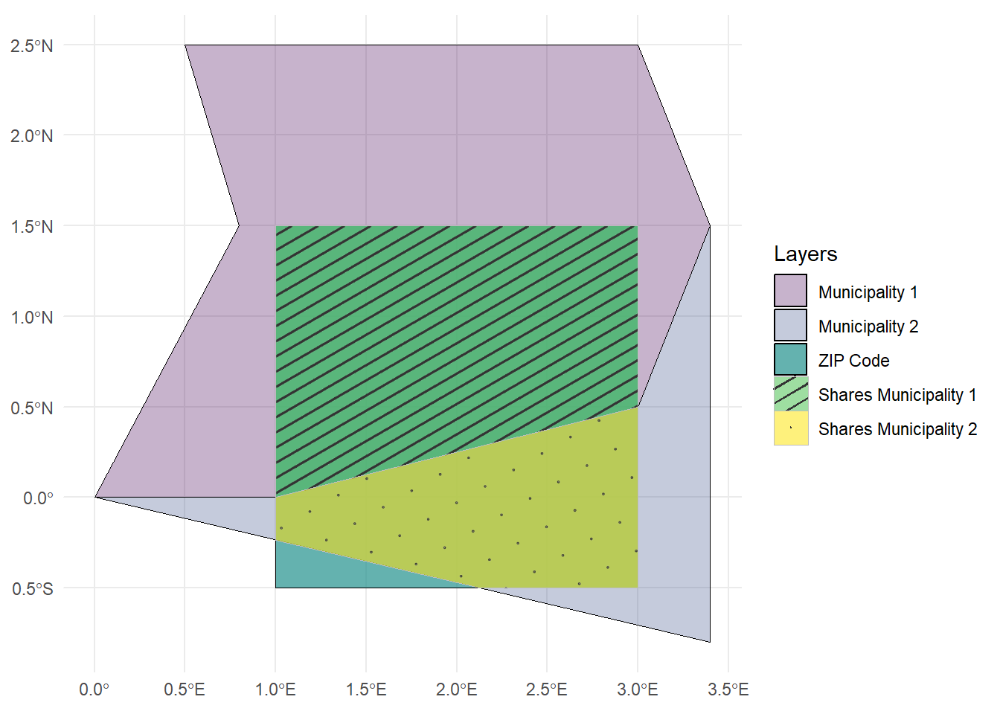
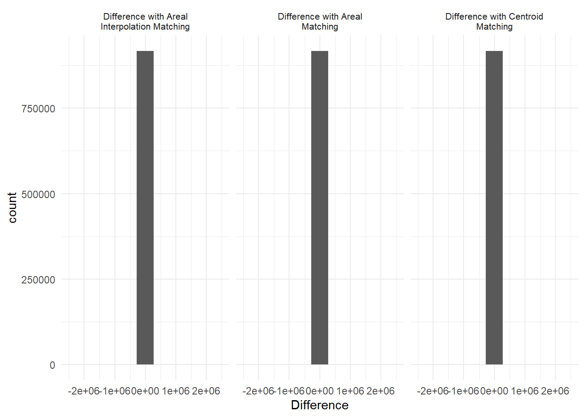

AreaMatch
Assessing Geospatial Linking of Incongruent Units
At a glance
What do we do when we want to link overlapping but incongruent spatial units? This tool provides replicable code to guide you through the linking process and evaluate your linking strategy. The tool application highlights the following steps
- Apply three different matching methods (centroid matching, areal matching, and areal interpolation)
- Evaluate the differences, effectiveness, and accuracy of the different matching techniques
- Evaluate the impact of the matching decision on the research question
Table of Content
Introduction
Data integration of social indicators from surveys with geospatial context variables has rapidly progressed. Applications in the social sciences are manifold, covering issues such as conflict and migration, political participation, environmental attitudes, and inequality. Geospatial approaches allow researchers to introduce new perspectives in explaining societal processes and emphasize the local aspects of globally relevant questions.
As an example, this tool application addresses the discourse on the rural-urban divide, which has received considerable attention in recent years. Rural areas can serve as breeding grounds for political discontent because citizens’ perceptions of their living environment may foster a sense of neglect, resource deprivation, and lack of societal respect. Consequently, citizens may become more susceptible to far-right narratives, which could explain the rise of populist and far-right sentiments in rural areas. Therefore, one central research question is: Is living in a less densely populated area, such as a rural place, associated with far-right party preferences? To answer this question, it is necessary to link survey data with information about the respondents’ living environment.
The linking process is crucial to answering this research question but is prone to certain pitfalls, such as incongruent geospatial units, e.g. overlapping geospatial units that do not share a common border. In many (online) surveys, respondents can indicate where they live by, for example, entering the ZIP code of their home address. This information allows for the linking of contextual information about the respondents’ living environment, like population density, to the survey data. However, contextual information is often not available at the ZIP code level. Instead, it refers to administrative units, such as municipalities. These two different spatial units are often not congruent, increasing uncertainty in the linking process.
This tool addresses this challenge by highlighting linking techniques that can be used to successfully link the datasets and assessing the uncertainty of the linking process.
Data Prerequisites and Description
To replicate this tool, researchers need the following:
- Survey data that includes an identifier for the target areal units where respondents reside and for which the attribute needs to be linked or estimated
- The geometries of the target areal units
- The geometries of the source unit that include the attributes information they are interested in
For this tool application, we rely on three data sources: (synthetic) survey data including self-reported ZIP codes, the geographies of German ZIP code areas, and the geographies of German municipalities, including attributes of interest, in this case population density.
We base our analysis example on survey data from the German Longitudinal Election Study (GLES). The GLES Tracking consists of short cross-sectional online surveys (CAWI) conducted three times a year. Each cross-sectional sample includes approximately 1,000 respondents (GLES 2024). For this analysis, we create a synthetic data set based on the GLES Tracking November 2023, T56. Respondents were asked to indicate their approval of the German radical right party AfD on a scale from 1 (“I don’t think highly of this party at all”) to 11 (“I think very highly of this party”) (variable t14h). At the end of the questionnaire, they were also asked to enter the 5-digit ZIP code of their primary residence (variable t71).
Important
Due to data protection regulations, ZIP codes cannot be published in the Scientific Use Files of the survey data, but only accessed through the Secure Data Center at GESIS. For this tool application, we provide simulated data that reproduces the real correlation of the GLES data without allowing conclusions to be drawn about the place of residence or the interviewee.
The two additional data sources provide the necessary geographies of ZIP code areas and municipalities and their corresponding attributes. We rely on the Open Data portal ArcGIS Hub to access the geometries of the German ZIP code areas and municipalities. Data can be downloaded directly as a shapefile or GeoPackage file. We work with a geospatial data type called vector data, which is organized similarly to any other data table: each row represents a geometric object (e.g., a ZIP code area or a municipality), and each column holds an attribute (e.g., population density). For detailed information on handling geospatial data and using the package sf, you can refer to our course “Introduction to Geospatial Techniques for Social Scientists in R”.
Tool Functions To Assess the Spatial Linking Process
This tool application provides replicable code to guide the user through the linking process and assess their linking strategy. The tutorial highlights the following steps:
Centroid linkage: This technique involves linking data based on the central point (centroid) of a geographic area. For example, the centroid of a ZIP code area is linked to the municipality in which the centroid is located.
Areal matching: This method matches entire areas to one another, such as linking ZIP code areas to municipalities based on the largest overlapping area.
Areal interpolation: This technique redistributes data from one set of geographic units to another. The basic approach, area-weighted spatial interpolation, takes into account the size of the areal overlap and assigns the value of the overlapping area in proportion to the overlap.
Overall Assessment of Linking Techniques: Evaluates the differences, effectiveness, and accuracy of the different linking techniques to determine the best method for integrating the survey and geospatial data at hand.
Influence of Linking Technique on Research Question: Analyzes how the choice of linking technique affects the outcomes and interpretations of the research question, ensuring that the conclusions drawn are robust and reliable.
Setup
Getting started
Packages
There are several packages out there that allow geospatial data handling in R. Since we are working mainly with vector data, we heavily rely on the package sf. The packages dplyr, ggplot2, and tibble are used for data manipulation and visualization.
# Load necessary packages ----
library(dplyr) # For data manipulation
library(ggplot2) # For data visualization
library(sf) # For handling spatial (geometric) data
library(tibble) # For creating and managing tibbles (data frames)Geospatial Data
In Germany, the 5-character ZIP code areas often do not align with municipal boundaries, leading to both overlap and incongruence. This mismatch can be more pronounced in rural areas, where larger ZIP code regions may encompass multiple small municipalities. In contrast, urban areas tend to have several distinct ZIP codes that fall within a single municipality. For example, the capital Berlin, as a German ‘city-state’, is one municipality with 190 ZIP codes.
When selecting and loading the geospatial data, we always check for three sources of errors:
Consistent (projected) coordinate reference systems. In our case, both shapefiles are projected in WGS 84 (EPSG: 3857).
Timeliness of administrative boundaries and territorial reforms. For example, we use the 2022 municipality boundaries and the 2023 ZIP code areas.
Existence, column names, and format of identifiers and variables of interest. For instance, we require the ZIP code and municipality code to be in character format in our data frame.
# Load ZIP code data ----
zip_codes <-
# Load spatial data from GeoPackage file
sf::st_read("./data-raw/PLZ_Gebiete_7155512659375659703.gpkg") |>
# Select only relevant columns: ZIP code and population
dplyr::select(zip_code = plz, inhabitants_zip_code = einwohner)Reading layer `OSM_PLZ' from data source
`C:\Users\stroppan\Documents\zipmatching\data-raw\PLZ_Gebiete_7155512659375659703.gpkg'
using driver `GPKG'
Simple feature collection with 8170 features and 4 fields
Geometry type: MULTIPOLYGON
Dimension: XY
Bounding box: xmin: 653035.2 ymin: 5986275 xmax: 1674460 ymax: 7373264
Projected CRS: WGS 84 / Pseudo-Mercator# Load municipality data ----
municipalities <-
# Load spatial data from GeoPackage file
sf::st_read("./data-raw/Gemeindegrenzen_2022__mit_Einwohnerzahl_4398740898366155627.gpkg") |>
# Select AGS (municipality code), population and area size in square kilometers columns
dplyr::select(ags = AGS, inhabitants_municipality = EWZ, area_municipality = KFL)Reading layer `GEM_ew_22' from data source
`C:\Users\stroppan\Documents\zipmatching\data-raw\Gemeindegrenzen_2022__mit_Einwohnerzahl_4398740898366155627.gpkg'
using driver `GPKG'
Simple feature collection with 10990 features and 17 fields
Geometry type: MULTIPOLYGON
Dimension: XY
Bounding box: xmin: 653028 ymin: 5986277 xmax: 1674447 ymax: 7373282
Projected CRS: WGS 84 / Pseudo-MercatorWe also advise to always plot the data for a visual inspection of the projection and completeness of the geospatial information.

Survey Data
Due to data protection regulations, we cannot use real-world survey data, but we base our tool application on simulated data that were created on the basis of the GLES Tracking November 2023, T56. To prepare the simulated data, we clean the original survey data to retain only valid ZIP codes and then link the data with geospatial data using centroid and areal matching techniques, followed by area-weighted interpolation for population and area estimates. Finally, we calculate correlations between the variable of interest, “afd_rating” and population densities derived from the geospatial data. In a next step, we generate random ZIP codes, introducing some invalid entries to mimic the real-world data. We repeat the linking process and then simulate the dependent variable based on the original correlations to derive the simulated data. To replicate the creation of the simulated survey data, we provide the R-Script here.
survey <- readRDS("./data-raw/simulated_survey_data.rds")Inspecting data
Before linking survey data, it is crucial to inspect the ZIP codes provided by respondents, especially when participants entered their ZIP codes independently. The self-reported nature of data entry can lead to several issues, like refusal to respond or typographical errors, which can result in invalid or missing ZIP codes. The provided code categorizes the self-reported ZIP codes into three statuses: “Non Response”, “Invalid ZIP Code” (For instance, ZIP codes that are not five characters long or that do not exist in the predefined list of valid ZIP codes), and “Valid”. By utilizing this categorization, researchers can identify and address potential data quality issues before data integration.
# Create a new column 'status' to categorize the ZIP codes
survey <- survey |>
dplyr::mutate(
# Use case_when to classify each ZIP_code into different statuses
status = dplyr::case_when(
# Condition 1: If zip_code is NA, classify as "1 Non Response"
is.na(zip_code) ~ "1 Non Response",
# Condition 2: If zip_code does not have exactly 5 characters,
# classify as "2 Invalid ZIP Code"
nchar(zip_code) != 5 ~ "2 Invalid ZIP Code",
# Condition 3: If zip_code is not found in the list of valid ZIP codes,
# classify as "2 Invalid ZIP Code"
!zip_code %in% zip_codes$zip_code ~ "2 Invalid ZIP Code",
# Condition 4: If zip_code is found in the list of valid ZIP codes,
# classify as "3 Valid"
zip_code %in% zip_codes$zip_code ~ "3 Valid"
)
)
# Create a summary table to count the occurrences of each status
summary_table <- survey |>
dplyr::group_by(status) |> # Group the data by the 'status' column
dplyr::summarise(
# Count the number of occurrences for each status
count = dplyr::n(),
# Calculate the frequency
freq = (dplyr::n() / nrow(survey)) * 100
) |>
# Convert the result into a tibble for easier viewing and manipulation
tibble::as_tibble()
print(summary_table)# A tibble: 3 × 3
status count freq
<chr> <int> <dbl>
1 1 Non Response 63 6.3
2 2 Invalid ZIP Code 17 1.7
3 3 Valid 920 92 In this case, 6.3% of respondents did not answer the ZIP code question, and 1.7% provided an invalid ZIP code. What we do not check here is whether respondents entered their correct ZIP code. Depending on the data at hand, it might be possible to verify whether other self-reported data, such as the federal state, or data from other sources align with this information.
For the ongoing linking process, we exclude all observations that did not enter a ZIP code or entered an invalid one, working instead with a subsample of all valid ZIP codes in the survey. Since we will use more spatial techniques in the following analysis, we rely on this reduced spatial data frame.
# Create a reduced dataset based on the valid ZIP codes from the survey data
zip_codes_valid <-
survey |>
# Filter the survey data to include only rows with a valid ZIP code status
dplyr::filter(status == "3 Valid") |>
# Perform a left join with the zip_codes dataset on the 'zip_code' column
dplyr::left_join(zip_codes, ., by = "zip_code") |>
# Convert the resulting data frame to a simple features (sf)
sf::st_as_sf()
Important
If you want to create a complete matching list between all ZIP codes and all municipalities in Germany, you can also use the complete ZIP code data set. However, it might take a while to create this data set and run the spatial joins.
Tool application
Matching methods
Data simulation
We’re sampling 1,000 points within each valid ZIP code area to later assess the accuracy of our linking techniques. By simulating 1,000 hypothetical living locations for respondents who reported living in a specific ZIP code area, we can evaluate whether our method accurately aligns each sampled point with the correct municipality. This approach allows us to identify any discrepancies or inaccuracies in the linking process and compare the three linking methods.
# Sample points within ZIP code areas ----
# Randomly sample points within each ZIP code area. Note: This can take a long
# time due to the number of points sampled.
points_in_zip_codes <-
zip_codes_valid |>
# Sample 1000 points per area
sf::st_sample(size = c(1000, 1000), progress = TRUE, exact = FALSE) |>
# Convert sampled points to an sf object
sf::st_as_sf() |>
# Spatially join sampled points with ZIP code data
sf::st_join(zip_codes) |>
# Arrange points by ZIP code for easier viewing
dplyr::arrange(zip_code) |>
# Assign unique IDs to each sampled point
dplyr::mutate(id = 1:dplyr::n()) |>
# Select only the ID and ZIP code columns
dplyr::select(id, zip_code)
# Join sampled points with municipality inhabitants data ----
# Spatially join the sampled points data with municipality data to match each
# point with actual inhabitants data from municipalities
points_with_real_inhabitants_municipality <-
points_in_zip_codes |>
# Join points with municipality data
sf::st_join(municipalities |> dplyr::select(-area_municipality)) |>
# Rename population column for clarity
dplyr::rename(real_inhabitants_municipality = inhabitants_municipality)Centroid matching
This method uses the centroid (center point) of each ZIP code area to find the corresponding municipality. It assumes that the center point accurately represents the ZIP code’s location in terms of municipality boundaries.
One benefit of this approach is its simplicity and efficiency, allowing for a quick linking process. However, a drawback is that it may overlook important local variations, as the centroid may not accurately reflect the distribution of residents or land use within the ZIP code area, nor does it account for the actual overlap or shape of the units. To do the linking process, we need to calculate centroids for each ZIP code and use the sf::st_join function to identify in which municipality each centroid is located.
# Centroid linking ----
centroid_matched <-
zip_codes_valid |>
# Calculate the centroid for each ZIP code area
sf::st_point_on_surface() |>
# Spatially join centroids with municipality data
sf::st_join(municipalities) |>
# Select relevant columns
dplyr::select(zip_code, inhabitants_zip_code, inhabitants_municipality, area_municipality ) |>
# Remove any duplicate rows
dplyr::distinct() |>
# Arrange by ZIP code for easy viewing
dplyr::arrange(zip_code)Areal matching
This method assigns each ZIP code area to the municipality in which the majority of its area lies.

The sf::st_join function identifies which municipality overlaps with each ZIP code area. The largest = TRUE argument indicates that if a ZIP code overlaps with multiple municipalities, it will only keep the attributes, e.g. the number of inhabitants, of the municipality with the largest overlapping area.
# Areal matching method ----
areal_matched <-
zip_codes_valid |>
# Spatial join using the largest overlap municipality for each ZIP code area
sf::st_join(municipalities, left = TRUE, largest = TRUE) |>
# Select relevant columns
dplyr::select(zip_code, inhabitants_zip_code, inhabitants_municipality, area_municipality) |>
# Remove duplicates to ensure each ZIP code matches one municipality
dplyr::distinct() |>
# Sort by ZIP code
dplyr::arrange(zip_code)Compared to centroid matching, areal matching considers the full geographic shape of ZIP code areas, providing a more accurate association with municipalities based on actual boundaries. One drawback of areal matching is that it can be more computationally intensive, especially when dealing with a large number of geographic units.
Another challenge arises when multiple municipalities overlap with a single ZIP code, requiring additional decisions about which municipality to assign. In this application, we take a straightforward approach and assign the municipality with the largest overlap.
However, we can also explore the number of municipalities each ZIP code overlaps with. To do this, we can modify the code to calculate the number of overlapping municipalities as well as the share of area overlap.
areal_matched <- zip_codes_valid |>
# Perform the spatial join using the largest overlap municipality for each ZIP code
sf::st_join(municipalities, left = TRUE, largest = TRUE) |>
# Count the number of municipalities that overlap each ZIP code
dplyr::group_by(zip_code) |>
#Identify ambiguous cases (those with more than 1 municipality)
dplyr::mutate(num_municipalities_overlap = n()) |>
# Select relevant columns
dplyr::select(zip_code, inhabitants_zip_code, inhabitants_municipality, area_municipality, num_municipalities_overlap) |>
# Remove duplicates to ensure each ZIP code is listed once
dplyr::distinct()
# Filter ambiguous cases: ZIP codes with more than one municipality overlap
ambiguous_cases <- areal_matched |>
dplyr::filter(num_municipalities_overlap > 1)
# Spatial intersection between ZIP codes and municipalities
overlap_areas <- sf::st_intersection(ambiguous_cases, municipalities)
# Calculate overlap area and share of overlap
overlap_areas <- overlap_areas %>%
dplyr::mutate(
overlap_area = sf::st_area(.), # Area of overlap
total_zip_area = sf::st_area(
ambiguous_cases[match(zip_code, ambiguous_cases$zip_code),]), # ZIP code area
share_of_overlap = overlap_area / total_zip_area # Calculate share of overlap
)We use this information to generate summary plots that highlight the uncertainty introduced by the areal matching method in the linking process.
About half of the sampled ZIP codes overlap with more than one municipality, which we refer to as “ambiguous” cases. However, when examining the share of area overlaps, most of these cases are less ambiguous than initially expected. ZIP code areas that overlap with multiple municipalities often have extreme overlap shares: either more than 90% of the area is shared with one municipality, or less than 10% overlaps with others. Very few cases show nearly equal overlap between two or more municipalities, making the decision to link to the largest municipality in most of these cases indisputable.
We can also map ZIP codes that overlap with one (black outline) or more municipalities (pink outline) in our sample, with the underlying map displaying the (logged) population size of each municipality.

ZIP codes that overlap with multiple municipalities are not concentrated in any specific region; they are spread across all federal states. However, there appears to be a partial correlation between a municipality’s population size and the likelihood of ZIP code areas overlapping with multiple municipalities. In other words, in less densely populated areas, ZIP codes are more likely to span multiple municipal borders.
Overall, the clusters of overlapping ZIP codes are not very pronounced, and the distribution of overlap shares does not raise significant concerns about the performance of the areal matching approach. The steps we have outlined here can serve as a guide for others using areal matching. These steps help assess whether linking to the largest municipality is justifiable based on the data or if alternative thresholds or robustness tests should be considered.
Areal interpolation
This method uses areal interpolation to distribute municipality inhabitants data proportionally across overlapping ZIP code areas.

It estimates the inhabitants for each ZIP code based on the proportion of its area that overlaps with each municipality by:
Overlap Calculation: For each ZIP code area, the function determines how much of its area overlaps with each municipality and, as such, calculates the intersection of each unit of both areal unit layers.
Proportional Distribution: Once the overlaps are identified, it calculates the proportion of each municipality’s area that overlaps with the ZIP code area.
Population Estimation: The estimated population for each ZIP code area is then computed by multiplying the municipality’s population by the overlap proportion. For example, if a municipality has 10,000 inhabitants and 40% of its area overlaps with a particular ZIP code, then 4,000 inhabitants would be allocated to that ZIP code area. If multiple municipalities overlap with a ZIP code area, it sums the estimated populations from each municipality to get the total population for that ZIP code.
As such, a key advantage of areal interpolation is its flexibility, as it can effectively manage irregular boundaries and varying sizes of geographic units. Nonetheless, it operates under the assumption that populations are uniformly distributed within areas, which may not reflect reality and can lead to inaccuracies if the input data is flawed or unrepresentative. Similar to areal matching, the process can be computationally demanding, especially when dealing with multiple overlapping areas and variable populations, as well as a large number of indicators that need to be interpolated.
# Areal interpolation matching method ----
areal_interpolation_matched <-
sf::st_interpolate_aw(
# Use municipality inhabitants data for interpolation
municipalities["inhabitants_municipality"],
# Target ZIP code areas for the interpolation
zip_codes_valid,
# Set to FALSE as population data is not "extensive" (not purely additive)
extensive = FALSE
) |>
# Combine interpolated results with original ZIP code data
dplyr::bind_cols(
zip_codes_valid |>
# Drop geometry to avoid duplication issues in final output
sf::st_drop_geometry() |>
# Select only ZIP code and its inhabitants count
dplyr::select(zip_code, inhabitants_zip_code)
) |>
# Choose relevant columns for output
dplyr::select(zip_code, inhabitants_zip_code, inhabitants_municipality) |>
# Ensure unique rows
dplyr::distinct() |>
# Sort by ZIP code
dplyr::arrange(zip_code)If you have several variables of interest, you need to perform the areal interpolation separately or create a function to loop over several columns. In our example, we also need the interpolated area size, so we repeat the step.
# Perform area-weighted interpolation for the area
areal_interpolation_matched <- sf::st_interpolate_aw(
# Use municipality are data for interpolation
municipalities["area_municipality"],
# Target zip code areas for the interpolation
zip_codes_valid,
# Set to FALSE as area is not "extensive" (not purely additive)
extensive = FALSE) |>
# Combine interpolated results with original zip code data
dplyr::bind_cols(
zip_codes_valid |>
# Drop geometry to avoid duplication issues in final output
sf::st_drop_geometry() |>
# Select only zip code and its inhabitants count
dplyr::select(zip_code, inhabitants_zip_code)
) |>
# Choose relevant columns for output
dplyr::select(zip_code, area_municipality) |>
# Ensure unique rows
dplyr::distinct() |>
# Drop geometry
sf::st_drop_geometry() |>
# Join with original
dplyr::left_join(
areal_interpolation_matched,
.,
by = "zip_code")For advanced users, we would also like to point out the package areal that builds upon the sfpackage we use here and expands the functions for area-weighted interpolations (Prener and Revord 2020).
Assessing the matching methods
Data preparation
We sampled nearly 1,000,000 points to simulate 1,000 hypothetical living locations within each ZIP code area (see Data simulation). This allows us to assess the accuracy and consistency of the linking process and compare the three matching methods. The step is crucial because, for each simulated point, we know the exact municipality match, which provides the correct value for the number of inhabitants in the respondents’ municipality.
It is important to note that we focus here on the differences in the number of inhabitants per municipality to evaluate the matching process because. Specifically, if a ZIP code area overlaps with spatial clusters of municipalities that have a similar number of inhabitants - areas with high positive spatial autocorrelation - the differences will naturally be smaller, even if the matching methods yield different results. Therefore, the evaluation of the linking process and ultimately the selection of the most appropriate method should consider the main variable(s) of interest.
Let’s calculate for each point location the difference between real and estimated number of inhabitants for each matching method (centroid matching, area matching and area-weighted interpolation).
# 1. Difference with Centroid Matching ----
diff_real_centroid <-
# Perform a left join between the real data and centroid-matched data
dplyr::left_join(
# The real inhabitants data joined to points
points_with_real_inhabitants_municipality,
# Centroid matched data (drop the geometry for non-spatial comparison)
centroid_matched |>
# Drop geometry column, keeping only tabular data
sf::st_drop_geometry()
) |>
# Create new columns for the differences
dplyr::mutate(
# Add a column indicating the type of comparison
`Type` = "Difference with Centroid Matching",
# Calculate the difference in inhabitants
Difference = real_inhabitants_municipality - inhabitants_municipality
)
# 2. Difference with Areal Matching ----
diff_real_areal <-
# Left join between real inhabitants data and areal-matched data
dplyr::left_join(
# The real inhabitants data
points_with_real_inhabitants_municipality,
# Areal matched data (drop geometry for comparison)
areal_matched |>
sf::st_drop_geometry()
) |>
# Create new columns
dplyr::mutate(
# Indicate the type of comparison
`Type` = "Difference with Areal Matching",
# Calculate difference between real and estimated inhabitants
Difference = real_inhabitants_municipality - inhabitants_municipality
)
# 3. Difference with Areal Interpolation Matching ----
diff_real_areal_interpolation <-
# Join real inhabitants data with areal interpolation-matched data
dplyr::left_join(
# The real inhabitants data
points_with_real_inhabitants_municipality,
# Areal interpolation matched data (without geometry)
areal_interpolation_matched |>
sf::st_drop_geometry()
) |>
# Create new columns
dplyr::mutate(
# Indicate the comparison type
`Type` = "Difference with Areal Interpolation Matching",
# Calculate the difference between real and interpolated inhabitants
Difference = real_inhabitants_municipality - inhabitants_municipality
) |>
# Ensure unique rows to avoid duplication
dplyr::distinct()In the next step, we combine and process the differences from three matching methods to calculate summary statistics, e.g. the median, mean, minimum, maximum, standard deviation, variance, and interquartile range. We also calculate accuracy indicators, including binary indicators for exact matches and for differences within ±500 inhabitants. Finally, we calculate the proportion of exact and near-matches for each method.
differences <-
# Combine rows from all difference data frames into one
dplyr::bind_rows(
# Difference data from Centroid Matching
diff_real_centroid,
# Difference data from Areal Matching
diff_real_areal,
# Difference data from Areal Interpolation Matching
diff_real_areal_interpolation
) |>
# Drop spatial geometry for non-spatial analysis
sf::st_drop_geometry() |>
# Group by matching method type (Centroid, Areal, etc.)
dplyr::group_by(Type) |>
# Add indicators for accuracy evaluation
dplyr::mutate(
# Binary indicator if Difference is exactly 0 (perfect match)
correct = ifelse(Difference == 0, 1, 0),
# Indicator if Difference within ±500 inhabitants
more_or_less_correct = ifelse(Difference > -500 & Difference < 500, 1, 0)
) |>
# Summarize the data for each matching method
dplyr::summarize(
# Median of the Difference column
median = median(Difference, na.rm = TRUE),
# Mean of the Difference column
mean = mean(Difference, na.rm = TRUE),
# Minimum difference
min = min(Difference, na.rm = TRUE),
# Maximum difference
max = max(Difference, na.rm = TRUE),
# Standard deviation of the differences
sd = sd(Difference, na.rm = TRUE),
# Variance of differences divided by 1000 for scaling
var1000 = var(Difference, na.rm = TRUE) / 1000,
# Interquartile range (IQR) of differences
iqr = IQR(Difference, na.rm = TRUE),
# Proportion of exact matches (where Difference = 0)
prop_correct = mean(correct, na.rm = TRUE),
# Proportion of matches within ±500 inhabitants
prop_more_or_less_correct = mean(more_or_less_correct, na.rm = TRUE)
)Lastly, we calculate the differences in estimated inhabitants between the different matching methods to better evaluate their performance. These calculations are stored as new variables, each labeled with the corresponding matching method.
# Calculate the differences between inhabitants estimated by
# Centroid Matching and Areal Matching
diff_centroid_areal <-
# Create a new tibble (data frame) to store the differences
tibble::tibble(
# Assign a label for the type of difference calculated
`Type` = "Difference Centroid and Areal Matching",
# Calculate the difference in inhabitants between the two matching methods
Difference = centroid_matched$inhabitants_municipality -
# Subtract Areal Matching inhabitants from Centroid Matching
areal_matched$inhabitants_municipality
)
# Calculate the differences between inhabitants estimated by Centroid Matching
# and Areal Interpolation Matching
diff_centroid_interpolated <-
# Create a new tibble to store the differences
tibble::tibble(
# Label for the difference type
`Type` = "Difference Centroid and Areal Interpolation Matching",
# Calculate the difference for this matching comparison
Difference = centroid_matched$inhabitants_municipality -
# Subtract Areal Interpolation inhabitants from Centroid Matching
areal_interpolation_matched$inhabitants_municipality
)
# Calculate the differences between inhabitants estimated by Areal Matching and
# Areal Interpolation Matching
diff_areal_interpolated <-
# Create a new tibble to store the differences
tibble::tibble(
# Label for the difference type
`Type` = "Difference Areal and Areal Interpolation Matching",
# Calculate the difference in inhabitants between the two methods
Difference = areal_matched$inhabitants_municipality -
# Subtract Areal Interpolation inhabitants from Areal Matching
areal_interpolation_matched$inhabitants_municipality
)Since we are ultimately interested in how the matching compares at the ZIP code level, rather than at the (simulated) point level, we aggregate the population estimate differences at the ZIP code level. This process allows us to compare the results of the three different matching methods (centroid matching, areal matching, and areal interpolation matching) and identify which method produces the smallest population difference for each ZIP code.
# Aggregate differences at the ZIP code level ----
diff_real_zip_code_aggregated <-
diff_real_centroid |>
# Group data by ZIP code
dplyr::group_by(zip_code) |>
# Drop geometry for non-spatial operations
sf::st_drop_geometry() |>
# Summarize by calculating mean difference
dplyr::summarize(
# Mean difference for centroid matching method
mean_difference_centroid = mean(Difference, na.rm = TRUE)
) |>
# Join with the areal matching differences
dplyr::left_join(
diff_real_areal |>
dplyr::group_by(zip_code) |>
sf::st_drop_geometry() |>
dplyr::summarize(
# Mean difference for areal matching method
mean_difference_areal = mean(Difference, na.rm = TRUE)
)
) |>
# Join with the areal interpolation matching differences
dplyr::left_join(
diff_real_areal_interpolation |>
dplyr::group_by(zip_code) |>
sf::st_drop_geometry() |>
dplyr::summarize(
# Mean difference for areal interpolation
mean_difference_areal_interpolation = mean(Difference, na.rm = TRUE)
)
)
# Calculate absolute mean differences ----
diff_real_zip_code_aggregated <-
diff_real_zip_code_aggregated |>
# Create columns for absolute mean differences
dplyr::mutate(
# Absolute value of mean differences (centroid method)
mean_difference_centroid_abs = abs(mean_difference_centroid),
# Absolute mean difference for areal method
mean_difference_areal_abs = abs(mean_difference_areal),
# Absolute mean difference for areal interpolation
mean_difference_areal_interpolation_abs =
abs(mean_difference_areal_interpolation)
)
# Identify the method with the smallest absolute difference per ZIP code ----
diff_real_zip_code_aggregated <-
diff_real_zip_code_aggregated |>
# Use bind_cols to add the method with minimum difference
dplyr::bind_cols(
# Find column name with minimum absolute difference
min_method = names(diff_real_zip_code_aggregated[-c(1:4)])[
# Inverse to get min absolute values, excluding grouping cols
max.col(-diff_real_zip_code_aggregated[-c(1:4)])
]
) |>
# Adjust cases with ties for consistency
dplyr::mutate(
min_method = ifelse(
# Tie condition check
mean_difference_centroid_abs == mean_difference_areal_interpolation_abs &
mean_difference_centroid_abs == mean_difference_areal_abs,
# Set to "centroid" if all methods tie
"mean_difference_centroid_abs",
min_method
)
) |>
# Remove intermediate absolute difference columns
dplyr::select(-contains("abs"))
# Join with ZIP code geometry and assign codes for each method ----
diff_real_zip_code_aggregated <-
diff_real_zip_code_aggregated |>
# Join back with ZIP code spatial data
dplyr::left_join(zip_codes) |>
# Convert back to an sf object for spatial analysis
sf::st_as_sf() |>
# Create a code for each method for easier visualization
dplyr::mutate(
min_method_code = dplyr::case_when(
# Assign code 1 for centroid method
min_method == "mean_difference_centroid_abs" ~ 1,
# Code 2 for areal method
min_method == "mean_difference_areal_abs" ~ 2,
# Code 3 for areal interpolation method
min_method == "mean_difference_areal_interpolation_abs" ~ 3
)
) |>
dplyr::mutate(
difference = dplyr::case_when(
min_method == "mean_difference_centroid_abs" ~ mean_difference_centroid,
min_method == "mean_difference_areal_abs" ~ mean_difference_areal,
min_method == "mean_difference_areal_interpolation_abs" ~
mean_difference_areal_interpolation,
TRUE ~ NA
)
)Accuracy of matching methods
First, we plot the differences between our variable of interest, number of inhabitants, for each matching method (centroid matching, areal matching, and area-weighted interpolation) compared with the real estimate based on the point locations. The histogram shows that all three matching methods differ from the real estimate, but on average, they exhibit similar levels of accuracy.
# Create a histogram to visualize the distribution of differences for each matching method ----
difference_histogram <-
# Combine differences from all matching methods into a single data frame
dplyr::bind_rows(
# Centroid method differences
diff_real_centroid,
# Areal method differences
diff_real_areal,
# Areal interpolation method differences
diff_real_areal_interpolation
) |>
# Remove spatial geometry for visualization purposes
sf::st_drop_geometry() |>
# Initialize ggplot with Difference as x-axis variable
ggplot2::ggplot(aes(x = Difference)) +
# Add histogram with 10 bins
ggplot2::geom_histogram(bins = 10) +
# Limit x-axis for a clear view of the distribution
ggplot2::xlim(-2500000, 2500000) +
# Create a separate histogram for each matching method type
ggplot2::facet_wrap(~`Type`, labeller = ggplot2::label_wrap_gen(width = 30)) +
ggplot2::theme_minimal() + # Apply minimal theme
# Wrap the facet labels
ggplot2::theme(
strip.text = ggplot2::element_text(size = 8) # Adjust font size
)
difference_histogram
Consistency of matching methods
In the next step, we aim to assess whether the matching methods are consistent. To achieve this, we plot the densities of the scaled differences across the different matching methods. By examining the pairwise comparisons of the matching methods, we can determine which methods produce more consistent results (indicated by smaller variance in the differences) and which methods tend to diverge more (indicated by larger variance).
Overall, we observe that the differences between the matching methods are relatively small, as all three density plots are centered around zero. This suggests that the compared matching methods produce similar results when linking the data.
While the location of the peak tells us about the magnitude of the differences, the width of the distribution reflects the variability of those differences. The first plot indicates small and consistent differences, implying that the centroid and areal matching perform similarly across the data. In contrast, when comparing centroid matching with the two other matching methods, we observe two slightly wider density plots. The plots suggest that the number of inhabitants estimated by centroid matching differs - at least in some areas - from the estimation of the areal matching and areal interpolation.
# Create density plots to compare scaled differences across matching methods ----
difference_densities <-
# Combine pairwise differences for each matching method
dplyr::bind_rows(
# Centroid and Areal method differences
diff_centroid_areal,
# Centroid and Interpolated method differences
diff_centroid_interpolated,
# Areal and Interpolated method differences
diff_areal_interpolated
) |>
# Group data by matching method type
dplyr::group_by(`Type`) |>
# Scale differences for comparability across methods
dplyr::mutate(Difference = scale(Difference)) |>
# Initialize ggplot with Difference as x-axis variable
ggplot2::ggplot(aes(x = Difference)) +
# Create density plot for distribution visualization
ggplot2::geom_density() +
# Set x-axis limits to focus on main data range
ggplot2::xlim(-10, 10) +
# Separate density plots by type of matching method
ggplot2::facet_wrap(~`Type`, labeller = ggplot2::label_wrap_gen(width = 30)) +
ggplot2::theme_minimal() + # Apply minimal theme
# Wrap the facet labels
ggplot2::theme(
strip.text = ggplot2::element_text(size = 8) # Adjust font size
)
difference_densitiesTo further assess the performance of the matching methods in different areas, we create a map that allows us to identify which method is most consistently successful at minimizing population differences across ZIP codes. The map shows which method results in the smallest difference when compared to the actual population values, as estimated via the simulated points.
This map allows us to identify which method is most consistently successful at minimizing population differences across ZIP codes. We observe that different matching methods perform better in certain regions. For example, in densely populated areas like cities, ZIP codes are often contained within a single municipality, so centroid matching performs particularly well in these areas. On average, areal interpolation, which takes multiple factors into account, performs the best across the entire study area. However, this method requires (all) spatial variables of interest to be available for the matching process, which may not always be the case and can be very resource-intensive.
# Create a map to visualize which method minimizes the difference for each ZIP code ----
diff_real_zip_code_aggregated_map <-
# Initialize ggplot for map
ggplot2::ggplot() +
# Add map layers with fill representing the best matching method
ggplot2::geom_sf(
data = diff_real_zip_code_aggregated, aes(fill = min_method), lwd = 0
) +
# Use viridis color scale to differentiate methods
scale_fill_viridis_d() +
ggplot2::theme_minimal() # Apply minimal theme
# Save the map plot to a file ----
ggplot2::ggsave(
# Specify file name and output path
"./test/diff_real_zip_code_aggregated_map.png",
# Reference the map plot
diff_real_zip_code_aggregated_map,
# High resolution for clear saved image
dpi = 600
)
diff_real_zip_code_aggregated_map_differences <-
# Initialize ggplot for map
ggplot2::ggplot() +
ggplot2::geom_sf(data = zip_codes, lwd = .01) +
# Add map layers with fill representing the difference
ggplot2::geom_sf(
data = diff_real_zip_code_aggregated, aes(fill = difference), lwd = 0
) +
# Use viridis color scale to differentiate differences
scale_fill_viridis_c() +
ggplot2::facet_wrap(~min_method) +
ggplot2::theme_minimal() # Apply minimal theme
diff_real_zip_code_aggregated_map
Effect of matching method on bivariate correlation
Finally, we aim to assess whether and how the different matching methods influence the answers to our research question. Rather than developing an elaborate model, we take a more straightforward approach by examining the correlation between our variable of interest—the AfD rating — and the matched context variable. Since we are not interested in the absolute value of inhabitants but the population density, we calculate the population density accordingly.
# Linking the datasets
linked_survey <-
survey |>
# Left join with centroid_matched, dropping geometry information
dplyr::left_join(centroid_matched |>
sf::st_drop_geometry(), by = "zip_code") |>
# Rename columns for clarity
dplyr::rename(cent_inhabitants_mun = inhabitants_municipality,
cent_area_mun = area_municipality) |>
# Left join with areal_matched, dropping specific columns and geometry
dplyr::left_join(areal_matched |>
sf::st_drop_geometry() |>
dplyr::select(-inhabitants_zip_code), by = "zip_code") |>
# Rename columns for clarity
dplyr::rename(areal_inhabitants_mun = inhabitants_municipality,
areal_area_mun = area_municipality) |>
# Left join with areal_interpolation_matched, dropping specific columns and geometry
dplyr::left_join(areal_interpolation_matched |>
sf::st_drop_geometry() |>
dplyr::select(-inhabitants_zip_code), by = "zip_code") |>
# Rename columns for clarity
dplyr::rename(interpolation_inhabitants_mun = inhabitants_municipality,
interpolation_area_mun = area_municipality) |>
# Calculate population densities based on the joined data
dplyr::mutate(
cent_pop_dens = cent_inhabitants_mun / cent_area_mun,
areal_pop_dens = areal_inhabitants_mun / areal_area_mun,
interpolation_pop_dens = interpolation_inhabitants_mun / interpolation_area_mun
)
# Calculate pairwise correlations with 'afd_rating' and columns containing 'population density'
correlations <- linked_survey |>
dplyr::select(afd_rating, contains("pop_dens")) |>
corrr::correlate(use = "pairwise.complete.obs")
# Melt the correlation matrix into a long format
correlations_long <- correlations %>%
# Pivot the data into long format
tidyr::pivot_longer(
cols = -term, # Keep the 'term' column as is
names_to = "y", # New column 'y' for variable names
values_to = "value" # New column 'value' for correlation values
) %>%
# Rename 'term' column to 'x' for consistency
dplyr::rename(x = term) %>%
# Filter for correlations with 'afd_rating' and not with itself
dplyr::filter(x == "afd_rating" & x != y)
# Create a custom label mapping (this is just an example)
custom_labels <- c(
"zip_pop_dens" = "ZIP code",
"cent_pop_dens" = "Centroid matching",
"areal_pop_dens" = "Areal matching",
"interpolation_pop_dens" = "Areal interpolation"
)
# Plot the correlation coefficients as a bar chart
ggplot2::ggplot(correlations_long, ggplot2::aes(x = y, y = value, fill = value)) +
ggplot2::geom_bar(stat = "identity", show.legend = FALSE) +
viridis::scale_fill_viridis(option = "D") + # Apply viridis color scale
ggplot2::labs(title = "Correlation of Population Density Variables with AFD Rating",
x = "Population Density Variables",
y = "Correlation with AFD Rating") +
# Customize the x-axis labels with custom names
ggplot2::scale_x_discrete(labels = custom_labels) +
ggplot2::theme_minimal() +
ggplot2::theme(axis.text.x = ggplot2::element_text(angle = 45, hjust = 1))As shown in the plot, there are only marginal differences in the correlation coefficients between the various matching methods. This suggests that, as previously indicated, the linking processes perform similarly across these matching methods.
From a substantive perspective, the correlations are consistently small and close to zero. Specifically, we observe that living in areas with higher population density is weakly correlated with lower AfD ratings. In other words, individuals living in more densely populated areas tend to support the AfD less — although the strength of this bivariate relationship is marginal.
In a more complex model, especially when controlling for individual-level characteristics, the relationship may change. Not only could the strength of the correlation differ, but the differences between matching methods could also become more pronounced. Similarly, the results may vary when matching other spatial units. For example, the analysis could yield a different picture when matching electoral districts, which by design have a similar number of inhabitants but vary significantly in area size. In conclusion, we recommend, whenever computationally and data-wise feasible, checking the robustness of results across different matching methods.
Conclusion and recommendations
In this tool application, we evaluated three matching methods—centroid matching, areal matching, and area-weighted interpolation—to link survey data with geospatial context variables for overlapping but incongruent spatial units. Our goal was to assess the accuracy of each method, compare their consistency, and ultimately evaluate their impact on our research question: Is there an association between population density and far-right political preferences, and is this association robust?
Our findings indicate that while all three methods show slight deviations from the actual population estimates (derived from simulated point locations), they generally produce similar results in terms of accuracy. In terms of consistency, subtle differences were observed: centroid matching performed slightly better in densely populated areas, while area-weighted interpolation provided the most reliable results on average across the entire study area. Despite these variations, the choice of matching method had minimal impact on the research outcomes, such as the correlation between AfD ratings and population density.
Key Takeaways:
- Centroid matching: Although it does not account for the area of overlap or local population variations, centroid matching performs surprisingly well in certain cases when linking ZIP code areas and municipalities in Germany. It offers a good trade-off between efficiency and quality, particularly in areas where the target spatial unit is known to lie within the source unit.
- Areal matching: We recommend investigating the ambiguity in the matching process, such as the number of source units with which the target unit overlaps, the area shares of the overlap, and the spatial clusters of ambiguous cases. Additional robustness checks and flagging of ambiguous cases may be necessary depending on the spatial units involved, particularly when the target unit overlaps significantly with (many) source units.
- Area-weighted interpolation: This method addresses the limitation of areal matching by interpolating data from all overlapping units. However, it has the highest computational requirements and data needs. In our example, it did not clearly outperform the other methods but provided the most consistent results across all spatial units.
- Robustness Checks: To ensure the reliability of findings, researchers should assess the robustness of their matching method by comparing it with at least one alternative approach. This is especially important when exploring how contextual information, such as population density or other geographical factors, is associated with individual-level attitudes or behavior. Robustness checks help confirm that the observed relationships are not influenced by the matching process but show robust associations.
Still, choosing the most suitable matching method is just one part of the equation. While the technical aspects of matching can improve the accuracy and consistency of linking processes, they do not replace the need for careful consideration of the conceptual underpinnings: what is the geographic unit that best captures the relevant social or environmental context for the research question under investigation? For example, the uncertain geographic context problem (UGCoP) (Kwan 2012) highlights the importance of carefully considering spatial boundaries in social research. The choice of neighborhood unit can significantly affect the results, particularly when studying phenomena such as support for far-right parties. The methods evaluated in this application provide different ways of addressing the challenges of mismatched or incongruent boundaries when defining a “neighborhood.” Still, researchers must remain aware that the linking process should be guided by a clear understanding of how these spatial definitions shape the conclusions drawn from integrated survey and geospatial data.
References
GLES. 2024. “GLES Tracking November 2023, T56.” GESIS. https://doi.org/10.4232/1.14243.
Kwan, Mei-Po. 2012. “The Uncertain Geographic Context Problem.” Annals of the Association of American Geographers 102 (5): 958–68. https://doi.org/10.1080/00045608.2012.687349.
Prener, Christopher, and Charlie Revord. 2020. “Areal: An R Package for Areal Weighted Interpolation.” Zenodo. https://doi.org/10.5281/ZENODO.3822534.
This work is licensed under a Creative Commons Attribution-NonCommercial 4.0 International License (CC BY-NC 4.0).